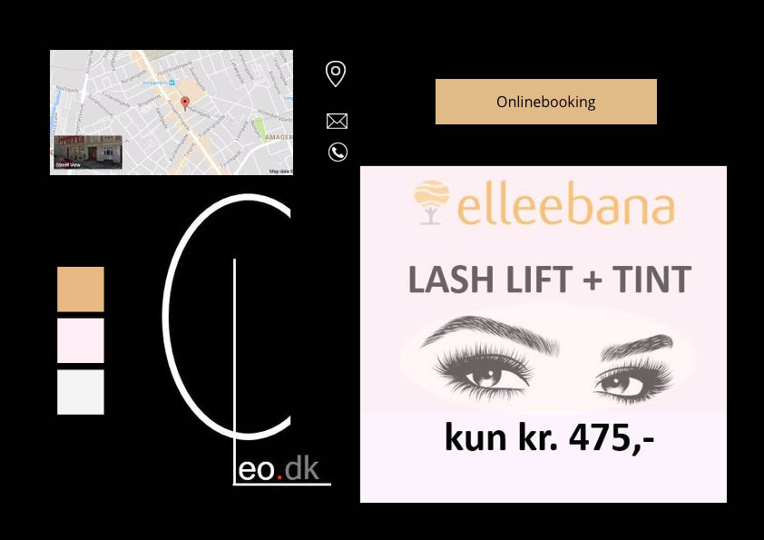
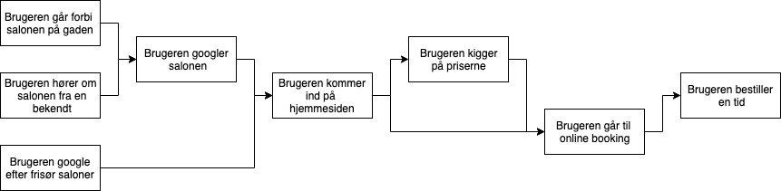

Discover
Virksomhedens profil
Det nuværende image
Virksomheden fremstår på nuværende tidspunkt lidt uprofessionel og kedelig. deres site er meget mørkt og ensformigt og det ligner ikke noget en professionel har sat sammen, men nærmere noget hun (frisøren) selv har sat sammen.
Det ønskede image
Virksomheden vil gerne fremstå professionel, samtidig med at deres hjemmeside gerne må illustrere den hyggelige stemning de har i salonen. Desuden går de meget op i miljøet og helbredet, ved ikke at bruge produkter der indeholder usund kemi og det må gerne fremgå tydeligt på hjemmesiden.
Brugerprofiler
Den nuværende målgruppe
Virksomheden ligger på Amager og deres målgruppe er dem der bor i nærområdet, derfor er det meget de unge og mere miljøbevidste de appellerer til. Virksomheden giver ikke permanenter, hvilket fjerner en stor del af ældre mennesker, der ønsker denne service.
Den ønskede målgruppe
Virksomheden ønsker selvfølgelig at beholde deres nuværende kunder og ønsker at udvide deres målgruppe ved at lægge vægt på deres hyggelige og private atmosfære og deres miljøbevidste og sunde salon, der er bedre for fx folk med parfumeallergi eller kvinder der er gravide eller ammer.
Analyse af eksisterende site
Styletile
Som det fremgår af styletilet er sitet meget sort og har ellers kun lyse baige farver. Grafikken på sitet er meget kantet og der benyttes ikoner.
Fotostilen
Der er ingen fotos på siden og derfor intet at analysere.
Sitemap
.png)
På siden er kun et home page, en online booking side og en prisliste side. Begge undesider åbner på en ny fane.
Wireframe

Indholdsoversigt
Forside
- Logo
- Link til online booking
- Link til prisliste
- Kontakt
- Adresse
- telefon
- Kort
- Link til instergram
- Link til bedømmelse
- Velkommen
- Beskrivelse
- Åbningstider
- Tider
- Link til online booking
- Link til facebook side
- Footer
- Navn
- Adresse
- Telefon
Prisliste side
- Rabatter
- Klip
- Farver
- Striber
- Bryn og vipper
- Kurbehandling
- Håropætning
- Vask føn og tørring
- Blomdahl medical ørepiercing
- Hair extensions
- Eyelash extensions
Online booking side
- Log ind
Funktionalitetsliste
På diagrammet kan det ses hvordan brugerne vil benytte det nuværede site.
Test
5 sekunders test:
- Site var meget mørk
- lagde mærke til hvidt billede og grimt logo